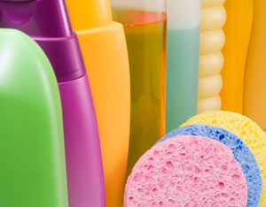
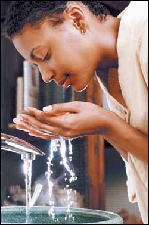
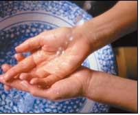
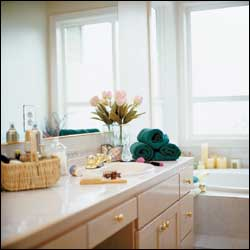
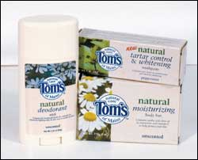
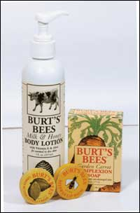
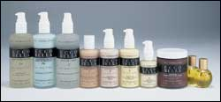
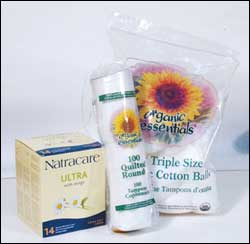
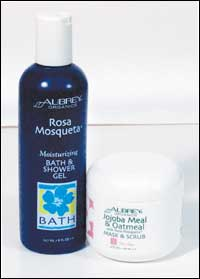
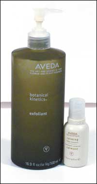

Americans slather, suds, scrub, polish and perfume with wild abandon, choosing from an array of gels and creams, pastes and foams. Thousands of products vie for our attention with their promises of fresher breath, whiter teeth, glossier hair and clearer skin. Fortunately, today more and more cosmetic companies are also looking for ways to avoid long lists of chemical ingredients and are starting to put out products that are better for our bodies and the planet.
Whether you know it or not, your body already is familiar - and intimately so - with the alphabet soup of ingredients on the backside of your shampoos, lotions, shaving creams and deodorants. Your skin absorbs some of what you slather on it. To some extent, says Ruth Winter, author of A Consumer’s Dictionary of Cosmetic Ingredients, all chemicals penetrate the skin, some in “significant amounts.” Researchers have been studying the effects of some cosmetic chemicals, and the results show why we should read labels carefully and avoid the use of some products.
In 2002, according to the American Association of Poison Control Centers, more than 2 million poison exposures were reported, 52 percent in children under 6 years of age. The most common cause? Ingestion of household products, with cosmetics and personal care products topping the list.
Allergies - ranging from itchy skin to burning, watery eyes - are common reactions to cosmetics, the American Academy of Dermatology reports. Studies show that one in 10 people experience adverse reactions to cosmetics in their lifetime.
Some cosmetics can make it difficult to breathe, especially for asthmatics. Toluene, a chemical detected in every fragrance sample tested in a 1991 Environmental Protection Agency (EPA) study, can trigger asthmatic attacks and also can cause asthma in healthy people.
According to Dr. Samuel Epstein and David Steinman, authors of The Safe Shopper’s Bible, some cosmetic ingredients also are possible players in health problems such as cancer, multiple chemical sensitivities and some birth defects.
Cosmetic industry spokespeople say that human exposure to individual substances and potential toxins falls far below the levels at which scientists test each substance in laboratory studies. However, no one is exposed to just a single dose of one particular chemical. A 2003 study conducted by the Centers for Disease Control and Prevention (CDC) found more than 116 different chemical compounds, including dioxins (byproducts of chlorine that have been linked to cancer) and phthalates that impair our reproductive function, in a wide range of personal care products used by the adults and children sampled. Their exposures came from routine, everyday use, from drawing a glass of water from the tap to spritzing on perfume.
Epstein estimates we are bombarded daily with a chemical cocktail, the synergistic effects of which we do not yet understand. But he notes that what researchers do know is that medical conditions such as cancer, asthma, birth defects and infertility are on the rise, and now affect more than 100 million Americans. How much of these increases are the results of chemicals found in cosmetics, no one really knows. But given the natural alternatives, it may be a wise choice to switch to nontoxic and safer products.
Although the Food and Drug Administration (FDA) monitors what goes in our food, drugs and cosmetics, less than 1 percent of the FDA’s budget is allocated to monitoring cosmetic product safety. Unlike food and drugs, which need prior approval before they hit store shelves, cosmetics are regulated only after their appearance in the marketplace.
When a food is labeled “certified organic,” it means it was produced and handled according to the standards established by the Department of Agriculture’s National Organic Program. A few personal care products use certified organic ingredients and meet the criteria of the “USDA Certified Organic” label. But some companies are taking liberties with labels to tap into the burgeoning natural and organic goods market.
When it comes to cosmetics, the terms, “organic” or “natural” can mean just about anything because the FDA has yet to establish criteria for these products.
“They [the manufacturers] could wave a tube of plant extract over a bottle and declare it ‘natural’,” John Bailey, a former director of the FDA’s Office of Cosmetics and Colors, says in Drop Dead Gorgeous. (See “Body Care Books,” below.)
So how can you read through the hype and hoopla to decipher what’s safe? When it comes to cosmetics, the name of the game is to be a conscious consumer: Arm yourself with information and read ingredient lists. The bottom line? You don’t have to give up your primping: The quick guide “What’s in a Body Care Product?” identifies chemicals to avoid and recommends safer ingredients.
If you want to know which brands are generally the safest, check out “Coming Clean” below. On the Internet, www.organicconsumers.org/bodycare and www.ewg.org/reports/skindeep also are good sources for more information.
Each day, the average American adult uses nine personal care products with 126 chemical ingredients, according to a survey by the Environmental Working Group (EWG). The ingredients in these products range from harmless components such as table salt and oatmeal, to chemicals known to cause cancer in humans. The formulas of most body care products include coloring, fragrance and thickening agents, and additives to extend shelf life. To help you decipher the gobbledygook of ingredient labels, below is a list of chemicals to avoid and some safer alternatives:
Coloring agents
• Choose NATURAL: Made from vegetable dyes and insect husks, natural colors are generally safer alternatives to artificial colors. Look for ingredients such as henna, annatto, beta carotene, chlorophyll.
• Lose ARTIFICIAL: All FD&C and D&C colors (found in everything from shampoos to lipsticks) are made from coal tar, a liquid or semisolid tar found in bituminous coal, which can contain many toxins.
Fragrance
• Choose PURE ESSENTIAL OILS: Essential oils - steam-distilled or pressed from the petals, leaves, rinds and barks of plants - are a natural alternative to synthetic fragrances. Shop for pure essential oils and buy organic whenever you can: Avoid products labeled “essence,” “perfume” or “fragrance” oil - these are imposters. Essential oils are concentrated and may be skin irritants, so dilute them with distilled water or in a base of grape seed or jojoba oil before use.r. Samuel Epstein and David Steinman note in The Safe Shopper’s Bible that although there is “no blanket assurance that natural fragrances are safer,” consumers who use one oil or a blend of no more than two to three oils are less likely to suffer from allergic reactions than those who use synthetic fragrances. “Synthetic fragrances can be made up of 600 or more raw ingredients,” they write. “Common sense says that the probability of a fragrance causing allergic reactions or irritation increases as its list of ingredients lengthens. Therefore, a simple combination of essential oils means fewer ingredients thrown into the pot.”
• Lose SYNTHETIC: Most of the synthetic fragrance ingredients available (more than 3,000) have never been tested for safety. A 1991 Environmental Protection Agency (EPA) study tested only 31 fragrance products for toxicological properties; many of the products’ chemicals also were found in the EPA’s own toxic substances list. With two routes of entry - through the lungs by inhaling the scent and through the skin by topical application - toxins in perfumes are readily absorbed and some accumulate in the body’s fatty tissues. A 1999 study detected the synthetic musk xylene in the blood of both human and animal subjects; musk xylene has been linked to higher miscarriage rates in humans.
Thickeners
• Choose VEGETABLE OILS AND WAXES: These are suitable replacements for mineral oil, plus they are renewable, unlike petrochemicals. Sweet almond, beeswax, grape seed and jojoba are a few of the oils and waxes that can substitute for mineral oil. Glycerin, a byproduct of soap-making, does the same job as propylene glycol, helping preserve the moisture content and spreadability in products. Plant-based oils may clog pores, but many are safer for you because they rank lower than petroleum-based propylene glycol.
• Lose PETROCHEMICALS: Many chemicals used to thicken body care products can cause skin irritation, and some have been linked to other chronic problems, including central nervous system disorders, reproductive problems, birth defects and cancer. A mixture of refined liquid hydrocarbons derived from petroleum, mineral oil and petrolatum are popular additives in many products, including lotions, creams and conditioners. They can clog pores and reduce the skin’s ability to eliminate toxins. Another ubiquitous ingredient in commercial cosmetics, propylene glycol (also known as
1, 2-propanediol), is a petroleum plastic used as a moisture-carrying agent. The National Institute for Occupational Safety and Health labels it a neurotoxin.
Preservatives
• Choose SAFER PRESERVATIVES: Grapefruit seed extract; phenoxyethanol, potassium sorbate, sorbic acid, vitamin E (tocopherol), vitamin A (retinyl), and vitamin C (ascorbic acid) cause the least irritation and fewest allergic reactions, Epstein says.
• Lose FORMALDEHYDE: The following ingredients may contain, release or break down into formaldehyde: 2-bromo-2-nitropropane-1,3-diol; diazolidinyl urea; DMDM hydantoin; imidazolidinyl urea; quaternium 15. Formaldehyde is used in nail polish, nail hardeners, soap, shampoos and deodorants as a cheap and effective fungicide and preservative, but researchers have found that formaldehyde causes cancer in rats and damages DNA; it may also react with other ingredients to mutate cells and produce cancer-causing effects. Sweden and Japan have banned use of formaldehyde in cosmetics.
Frills
• Choose PHTHALATE-FREE: Phthalates are a diverse group of chemicals that do everything from making nail polish chip-resistant to making perfume s cents last longer. To obtain a list of phthalate-free cosmetics, visit Not Too Pretty’s Web site at www.nottoo pretty.org/goodbad.htm.
• Lose PHTHALATES: In 2002, the EWG tested 72 name-brand cosmetics and found phthalates in nearly three out of four samples. Phthalates cause a broad range of birth defects in laboratory animals; they are particularly damaging to the male reproductive system, reducing sperm count and causing testicular malformations.
We love these body care products because, besides making you look good, they are free of petrochemicals, animal products, artificial colors and synthetic fragrances. You can find many of these products at your local food store, online at Mother Nature (www.mothernature.com) or through individual Web site listings. Many of the companies also have invested in feel-good, socially responsible endeavors, from preserving open space to supporting organic agriculture. - MOTHER
Tom’s of Maine
For more than 30 years, Tom’s of Maine has created a full array of products using ingredients from nature. Products are free of animal ingredients, artificial preservatives, flavors, colors and sweeteners. Their natural ingredients include ginger in toothpaste, lemon grass oil in soaps and lichen in deodorant. All of their packaging, while minimal, is recyclable, including their toothpaste tubes. Call (800) 367-8667 or go to www.tomsofmaine.com.
Burt’s Bees
Beeswax and botanicals give Burt’s Bees products their glowingly good vibe. Burt’s Bees also uses minimal packaging. Most products come in No. 2 plastic, aluminum or glass containers to make recycling a breeze. Burt’s also invests in nature and has been acquiring lands to devote to conservation. Since 2000, the company has put more than 15,000 acres into conservation easements. Find products at a store near you at (800) 849-7112 or go to www.burtsbees.com.
Ecco bella
With Ecco Bella’s assortment of colorful plant- and mineral-based cosmetics, you can give coal tar colors and petrochemicals the kiss-off! Choose from a veritable rainbow of eye shadows, cheek and lip colorings, and then stow the stash in a 100-percent hemp bag. Ecco Bella donates a portion of every purchase to support environmental organizations and groups against animal cruelty. Call (877) 696-2220 or go to www.eccobella.com.
Natracare & Organic Essentials
Although researchers have shown that personal exposure to dioxin (byproducts of chlorine that have been linked to cancer) through the use of bleached cotton products such as tampons and sanitary napkins is minimal, growing and manufacturing conventional cotton products still produces an enormous plume of pollution each year. Buying organic cotton products, for personal care or otherwise, is an investment in your health - and the planet’s. Natracare offers sanitary napkins and tampons. Check them out at www.natracare.com. Organic Essentials now carries an entire line of organic cotton for personal care: Swabs, balls and rounds, as well as tampons and pads. Call (800) 765-6491 or visit www.organicessentials.com.
Aubrey Organics
For more than three decades, Aubrey Organics has been formulating some of the safest body care products according to its stringent guidelines of protecting human health and caring for the planet. Free of petrochemicals and synthetics, its products are made in small batches from ingredients such as cocoa butters, castile soaps and essential oils. Their Natural Spa Sea Wonders is the first cosmetics line to bear the Department of Agriculture's certified organic seal. Call (800) 282-7394 or go to www.aubreyorganics.com.
Aveda
Although now owned by the cosmetic giant Estée Lauder, Aveda - a salon-line cosmetics and personal body-care company - sticks to its original grass-roots mission: using primarily plant- and mineral-based natural ingredients. Besides many feel-good products, Aveda also caters to the socially conscientious consumer, supporting indigenous cultures and sustainable agriculture. Packaging cleverly incorporates post-consumer recycled content. Available at Aveda Concept Salons, some department stores and beauty salons. Call (866) 823-1425 or visit www.aveda.com to find a location near you.
A Consumer’s Dictionary of Cosmetic Ingredients by Ruth Winter. This chemical dictionary is a handy reference while shopping.
The Safe Shopper’s Bible: A Consumer’s Guide to Nontoxic Household Products, Cosmetics and Food by David Steinman and Dr. Samuel S. Epstein. Offers background on toxic chemicals found in many household products, makes recommendations on safer alternatives.
Drop Dead Gorgeous by Kim Erickson. Outlines the dangers of and provides options for many chemicals in our personal care products.
Better Basics for the Home by Annie Berthold-Bond. Gives homespun recipes for safer, effective personal care products at a fraction of the cost of store-bought goods.
|
 ISTOCKPHOTO/IVAN MATEEV Each day, the average American adult uses nine personal care products with 126 chemical ingredients, according to a survey by the Environmental Working Group. |
 |
 |
|
 |
 |
 |
|
 |
 |
 |
|
 |
|
|